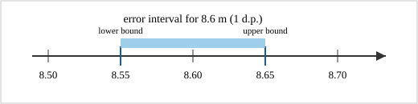

<script>if(location.hostname.endsWith('onrender.com'))location.replace('https://math-sandbox.pages.dev'+location.pathname+location.search+location.hash)</script>
<section class="theory" data-section="IGCSE-13.3">
<h2>13.3 Limits of accuracy — upper and lower bounds</h2>
<p class="src">Based on Cambridge IGCSE Mathematics Core and Extended Coursebook, 3rd edition (Karen Morrison and Nick Hamshaw), Chapter 13 Understanding measurement, printed pp.409–417 (error intervals and the 1.2 tonnes to 1 decimal place illustration on p.410, and calculated bounds later in the section). Printed pages were read from rendered scans of part_041 (pp.409–415) and part_042 (pp.416–417). Own wording and new numbers.</p>
<p class="key-words"><strong>Key words:</strong> <em>lower bound</em>, <em>upper bound</em>, <em>error interval</em></p>
<h3>Bounds of a rounded measurement</h3>
<p>A measurement given to a stated degree of accuracy is not exact. The smallest value it could have come from is the <strong>lower bound</strong>, and the greatest value it could have come from is the <strong>upper bound</strong>. The difference between these bounds is half a unit of the accuracy used. For example, if a length is \(8.6\,\mathrm{m}\) correct to 1 decimal place, the unit is \(0.1\,\mathrm{m}\), so you add or subtract half of \(0.1\):</p>
<p>\[
\text{lower bound}=8.6-0.05=8.55\,\mathrm{m},\qquad \text{upper bound}=8.6+0.05=8.65\,\mathrm{m}.
\]</p>
<p>The true value can be anywhere in this range. That range is an <strong>error interval</strong>. One standard way to write it is \(8.55\leqslant x\lt 8.65\), because a measurement of exactly \(8.65\) would usually be rounded up to \(8.7\). In many exam mark schemes, \(8.55\leqslant x\leqslant 8.65\) is also accepted. Always follow the wording of the question.</p>
<figure><figcaption>The measurement \(8.6\,\mathrm{m}\), correct to 1 decimal place, has lower bound \(8.55\,\mathrm{m}\) and upper bound \(8.65\,\mathrm{m}\).</figcaption></figure>
<div class="worked-example">
<h4>Worked example 1: Bounds and an error interval</h4>
<p class="src">Book: the 1.2 tonnes to 1 decimal place discussion, printed p.410. New measurement.</p>
<p>A length is given as \(8.6\,\mathrm{m}\), correct to 1 decimal place. Write down the lower bound and the upper bound, and give an error interval for the true length \(x\,\mathrm{m}\).</p>
<ol class="steps">
<li>Half of \(0.1\) is \(0.05\), so the lower bound is \(8.6-0.05=8.55\) and the upper bound is \(8.6+0.05=8.65\) <span class="mark">B1</span> <span class="mark">B1</span></li>
<li>An error interval is \(8.55\leqslant x\lt 8.65\) <span class="mark">B1</span></li>
</ol>
<p class="final"><strong>Answer:</strong> lower bound \(8.55\,\mathrm{m}\), upper bound \(8.65\,\mathrm{m}\); \(8.55\leqslant x\lt 8.65\)</p>
</div>
<div class="worked-example">
<h4>Worked example 2: Upper bound of a speed</h4>
<p class="src">Book: calculated bounds in 13.3 (greatest and least values from rounded measurements). New numbers, same structure as a typical speed-bounds question.</p>
<p>A runner covers \(18.6\,\mathrm{m}\), correct to 1 decimal place, in \(4\) seconds, correct to the nearest second. Calculate the upper bound of the runner's speed, in metres per second.</p>
<ol class="steps">
<li>The upper bound of the distance is \(18.6+0.05=18.65\,\mathrm{m}\). The lower bound of the time is \(4-0.5=3.5\,\mathrm{s}\) <span class="mark">M1</span></li>
<li>The upper bound of the speed is distance \(\div\) time using these bounds: \(18.65\div 3.5=5.32857\ldots\), which is \(5.33\,\mathrm{m/s}\) to 3 significant figures <span class="mark">A1</span></li>
</ol>
<p class="final"><strong>Answer:</strong> \(5.33\,\mathrm{m/s}\) (3 s.f.)</p>
</div>
<p>For a calculated quantity, choose the bounds that make the result as large or as small as the question asks. A fraction is largest when the top is as large as possible and the bottom is as small as possible.</p>
<h3>Common mistakes</h3>
<ul>
<li>Adding or subtracting the whole unit of accuracy instead of half a unit (for example, using \(8.5\) and \(8.7\) when the accuracy is 1 decimal place).</li>
<li>Using the upper bound of the time when finding the greatest possible speed.</li>
<li>Treating a value given to the nearest 10 as if it were given to the nearest unit.</li>
</ul>
<h3>Quick checks</h3>
<div class="quick-check">
<h4>Quick check 1</h4>
<p>A length is \(80\,\mathrm{cm}\), correct to the nearest \(10\,\mathrm{cm}\). Write down the lower bound, in centimetres.</p>
<details><summary>Worked solution</summary>
<ol class="steps">
<li>Half of \(10\) is \(5\), so the lower bound is \(80-5=75\) <span class="mark">A1</span></li>
</ol>
<p class="final"><strong>Answer:</strong> \(75\)</p>
</details>
</div>
<div class="quick-check">
<h4>Quick check 2</h4>
<p>A mass is \(200\,\mathrm{kg}\), correct to the nearest \(10\,\mathrm{kg}\). Write down the upper bound, in kilograms.</p>
<details><summary>Worked solution</summary>
<ol class="steps">
<li>Half of \(10\) is \(5\), so the upper bound is \(200+5=205\) <span class="mark">A1</span></li>
</ol>
<p class="final"><strong>Answer:</strong> \(205\)</p>
</details>
</div>
<div class="quick-check">
<h4>Quick check 3</h4>
<p>Each of 4 bags has a mass of \(12\,\mathrm{kg}\), correct to the nearest kilogram. Find the lower bound of the total mass, in kilograms.</p>
<details><summary>Worked solution</summary>
<ol class="steps">
<li>The lower bound of one bag is \(12-0.5=11.5\,\mathrm{kg}\) <span class="mark">M1</span></li>
<li>The lower bound of the total is \(4\times 11.5=46\,\mathrm{kg}\) <span class="mark">A1</span></li>
</ol>
<p class="final"><strong>Answer:</strong> \(46\)</p>
</details>
</div>
<p class="marks-key"><strong>Marks:</strong> M = method, A = accurate answer (depends on M), B = independent mark. Use half a unit of the given accuracy, and choose upper or lower bounds so that a calculated result is as large or as small as required.</p>
</section>
